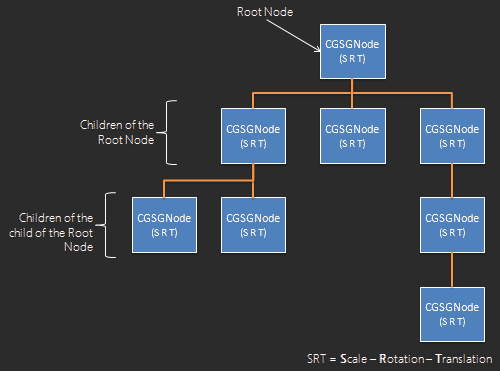
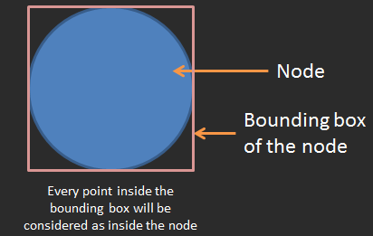

Create your nodes
The power of the framework is in its design:
cgSceneGraph does not render anything by itself, but provides a
framework and a lot of features to help you rendering what you need !
That's the big difference with other tools : you won't never be limited to what the
framework provides !
Of course, there are a lot of cool and useful already
existing extensions, and you can build
complete games and applications just with them :
- image
- animated sprites
- button
- webview
- particle system
- text
- square
- tab menu
- color picker
By extending the "CGSGNode" class !
What is the CGSGNode class ?
The CGSGNode class is the base class for any displayed items on the screen.
Everything in the graph is a CGSGNode or inherit from it (ie: is an extension):

The CGSGNode class encapsulates a lot of properties and methods, including a "render"
method. This one doesn't do anything, it has to be overrided by inherited classes.
Here is a list of properties and methods that a custom node (also called "extension" or
"plugin") will inherit:
Main properties of CGSGNode
The main (but not the only ones) properties are:- isDraggable
- isResizable
- isVisible
- isTraversable
- globalAlpha
- name
- isSelected (read only)
- rotationCenter
- position (read only)
- dimension (read only)
- scale (read only)
- rotation (read only)
- onClick
- onDblClick
- onDrag
- onDragEnd
- onResize
- onResizeEnd
- onSelect
- onDeselect
- ...
Main methods of CGSGNode
- render (context)
- setSelected (isSelected)
- pickNode (mousePosition, absoluteScale, ghostContext, recursively, condition)
- translateTo, translateWith, translateBy
- resizeTo, resizeWith, resizeBy
- scaleTo, scaleWith, scaleBy
- rotateTo, rotateWith, rotateBy
- addChild (newNode)
- name
- addChildAt (newNode, index)
- removeChild (node, searchRecursively)
- detachChildAt (index)
- detachChild (childNode)
- setRegionConstraint (region)
- getAbsolutePosition ()
- getAbsoluteScale ()
- getAbsoluteRotation ()li>
- getAbsoluteLeft, getAbsoluteRight, getAbsoluteTop, getAbsoluteBottom, getAbsoluteWidth, getAbsoluteHeight
- getWidth, getHeight
- isColliding, getListOfCollidingBrothers, isCollidingABrother
- ...
How to extend the CGSGNode class ?
cgSceneGraph is a OOP tool, so to inherit from CGSGNode, a class has to extend
CGSGNode.
This is done simply like this:
var CustomNode = CGSGNode.extend(
{
//constructor.
// You can specify any parameters you need
initialize:function (x, y, width, height) {
//call the constructor of the parent class.
// CGSGNode take 4 parameters : x, y, width, height
this._super(x, y, width, height);
/**
* CGSGNode variable defining the type of the class
* @property classType
* @readonly
* @type {String}
*/
this.classType = "CustomNode";
//define here every property you need
this.color = "#ff0000";
//...
},
/**
* Custom rendering.
* You must define this method and declare inside what is the rendering loop
* for this node.
* Here we will just draw a square
* @method render
* @override
* @protected
* @param {CanvasRenderingContext2D} context the context into render the node
* */
render:function (context) {
//save current state
this.beforeRender(context);
//apply the global alpha (ie the opacity), that is a CGSGNode property
context.globalAlpha = this.globalAlpha;
//draw this zone by using the custom property : this.color
context.fillStyle = this.color;
//we draw the rect at (0,0) because we have already translated the context
// to the correct position
context.fillRect(0, 0, this.dimension.width, this.dimension.height);
//restore state
this.afterRender(context);
},
/**
* Return a copy of this node
* @method copy
* @override
* @return {CGSGNodeSquare} a copy of this node
*/
copy:function () {
var node = new CustomNode(this.position.x, this.position.y,
this.dimension.width, this.dimension.height);
//call the super method
node = this._super(node);
node.color = this.color;
return node;
}
}
);
How to use your extension
Use your node as you use any node: by instanciating it :)
Example:
createScene : function () {
//first, define an arbitrary node as root node
var rootNode = new CGSGNode(0, 0, 0, 0);
this.sceneGraph.addNode(rootNode, null);
//X, Y, WIDTH, HEIGHT
var square = new CustomNode(20, 20, 150, 150);
//you can use CGSGNode properties
square.isDraggable = true;
square.isResizable = true;
square.globalAlpha = 0.8;
//custom your node
square.color = "lightgray";
//add your square as child of the root node
rootNode.addChild(square);
//instanciate a second CustomNode
var square2 = new CustomNode(200, 200, 20, 35);
rootNode.addChild(square2);
}
Advanced option : the picknode mode "ghost"
What is the "ghost mode" ???
Well, I have to start to explain that the framework has 2 ways to detect a node under a position (like the mouse
cursor when the user click on a node) :
"Region mode" and "ghost mode". You can switch from one to other with :
myNode.pickNodeMethod = CGSGPickNodeMethod.REGION;
//or
myNode.pickNodeMethod = CGSGPickNodeMethod.GHOST;
- The region mode: the framework will check if the position to check is inside
the box around the node (called "bounding box").
This method is not very accurate (in the case of a circle, it will validate a point outside the circle, but inside the bounding box), but is very fast.
So it's the default method.
Example: 
- The ghost mode: If you need very accurate detection, you can use the ghost
mode.
The difference is that the framework will render the node in full red color inside a temporary and in-memory white canvas. Then it will check if the pixel under the position is white or red. As easy :)
However, this method is really slower than the region mode and needs that the node define how to render it in the ghost canvas.
That is done inside the custom class:/** * @method renderGhost * @param {CanvasRenderingContext2D} ghostContext the context into render the node */ renderGhost : function (ghostContext) { //save current state this.beforeRenderGhost(ghostContext); //render the node here by using the ghost color ghostContext.fillStyle = cgsgGhostColor; //do the render here ... // for fast optimization, it could be a good idea to render squares that roughly represent the node. // Sometimes it's faster to just render 3 or 4 squares than render complex bezier curves, // for "approximatively" the same result detection result. // For example, if your node represent a tree, you can render here a big square for the leaves and a vertical //square for the trunk of the tree. It will be 20 times faster for almost the same accurate of detection. //restore state this.afterRenderGhost(ghostContext); }